第一章 · 把种子留下来
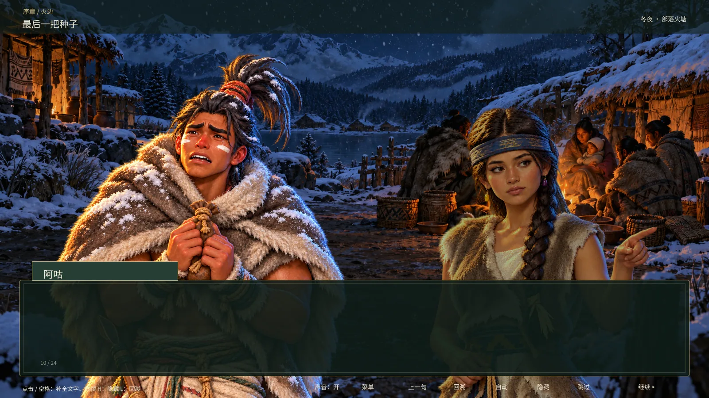
一款历史题材的玉米育种原型。玩家种田、授粉、看收成，再把选出的种源带进下一季。
策划重点是把遗传知识变成可操作的选择：种在哪里、和谁配、留下什么，怎样适应新的环境。
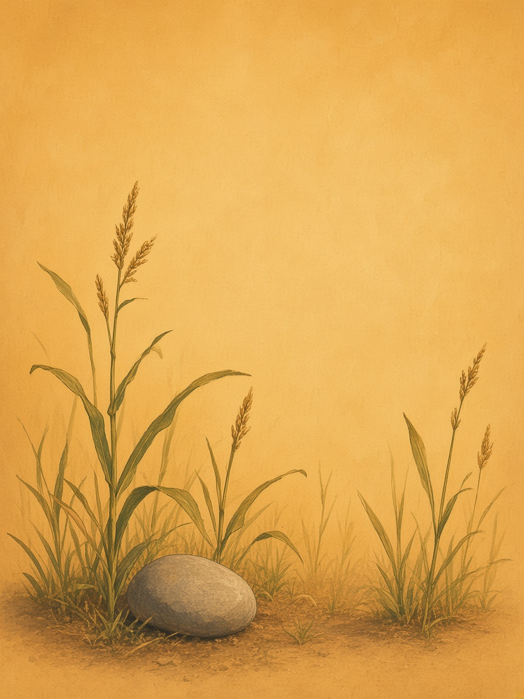
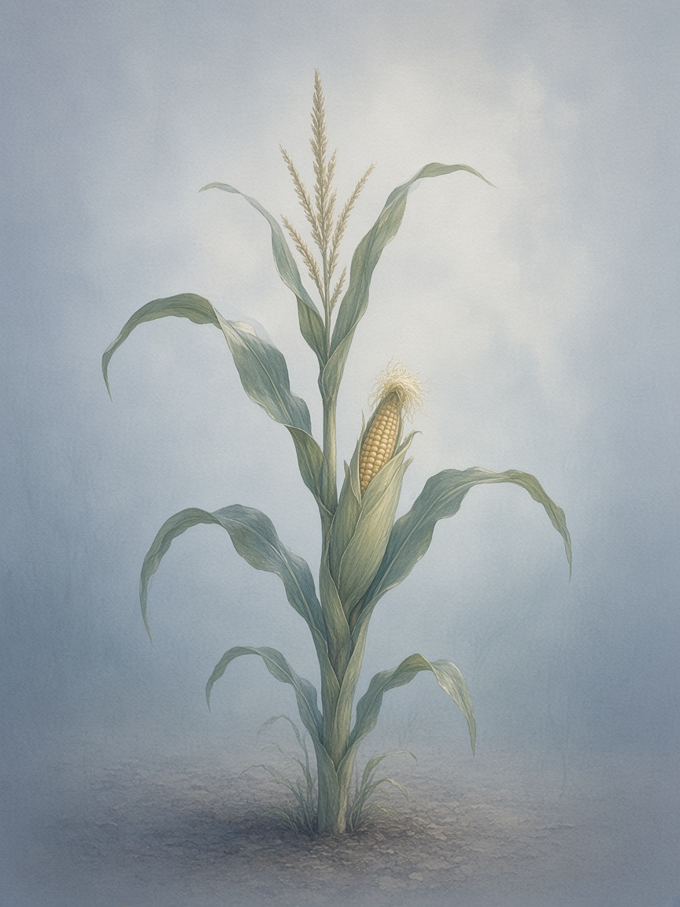
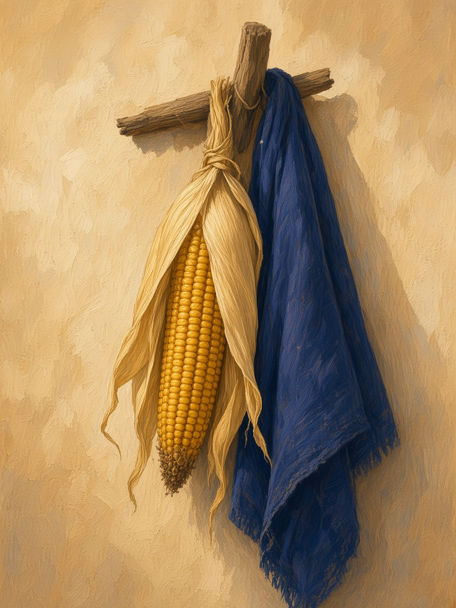
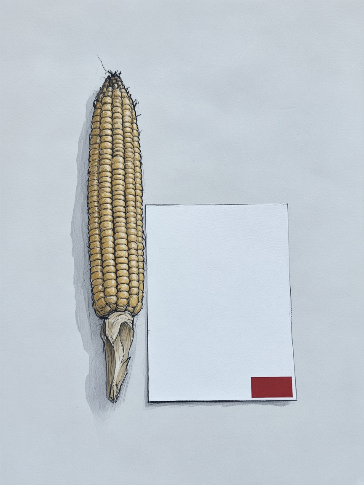
穗序 · 第一章
第一章 · 把种子留下来

一款历史题材的玉米育种原型。玩家种田、授粉、看收成，再把选出的种源带进下一季。
策划重点是把遗传知识变成可操作的选择：种在哪里、和谁配、留下什么，怎样适应新的环境。
策划任务 · 逐季教学
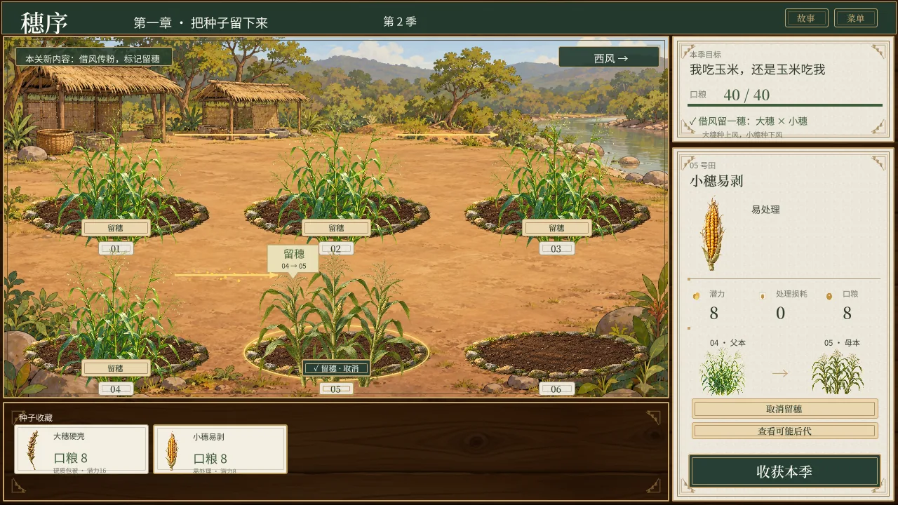
先种植，再看风，再认识后代差异。用四季逐步引入机制，先让玩家看到结果，再解释背后的规则。
每季粮食与下一季种源同时产出；教学围绕已有田地展开，控制操作和资源管理的学习负担。
策划任务 · 从知识到反馈
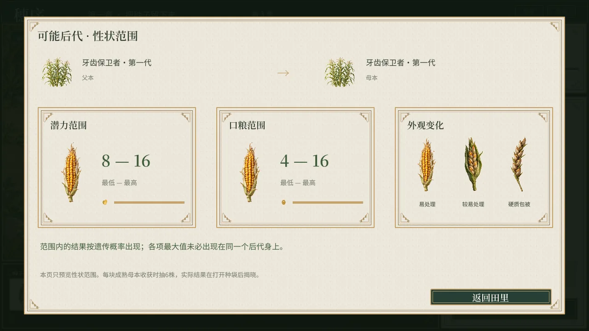
把播种、授粉、季末揭晓和留种接成连续流程；用性状、收成与可见亲本关系解释玩家刚刚做出的选择。
第二章 · 种子与地方
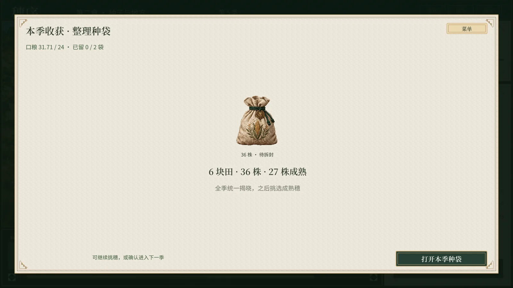
向阳坡、河谷、山口的季长分别为4、3、2。高产晚熟的大穗，到了山口可能没有收成。
以“让山口长出粮食”为长期目标，把熟期、产量和包被的取舍分成前四关教学，再进入可重复的定居段。
策划任务 · 随机与保底
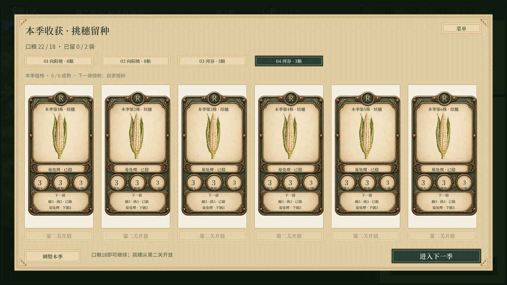
每块田六株，收成按六株平均；季末从成熟株中挑穗，每季最多新增两袋，原有种源持续保留。
教学保底限定在亲本可能产生的结果里；重复查看和读档不会刷新同季抽样，避免把选育变成反复重抽。
策划任务 · 有代价的改良
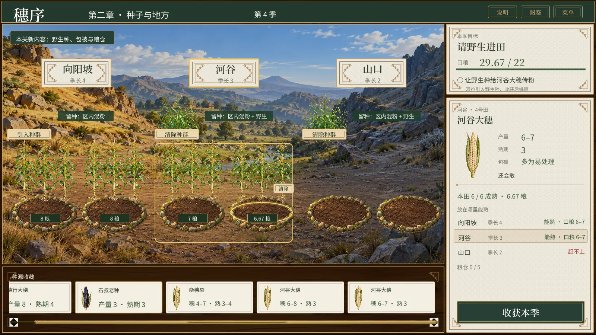
野生种带来早熟，也带回难处理的壳。田缘有野生种就与它串粉，清掉后自家授粉，下一代才能继续分离与筛选。
粮仓和可恢复的歉收季给尝试留空间。失败影响评价，玩家仍能带着种源继续种下去。
第三章 · 玉米带
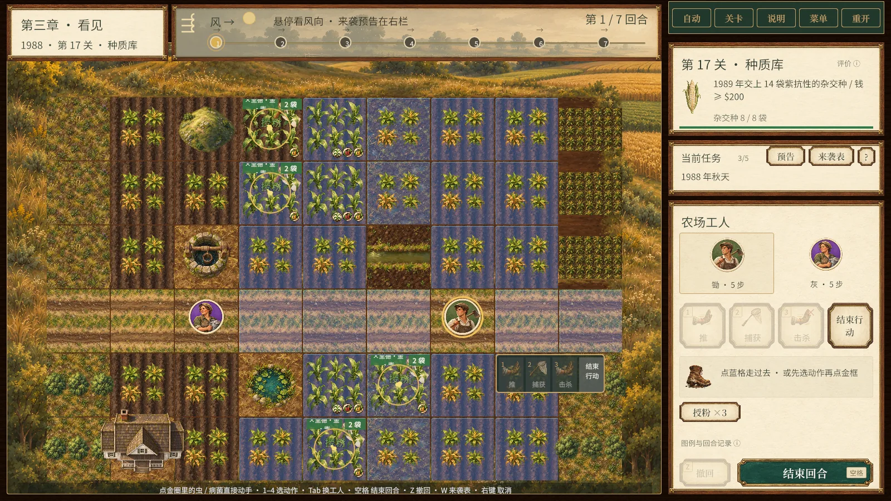
在田间行动、育种实验和订单之间切换。工人走位、防治和授粉服务于同一个问题：怎样把想要的品系种出来、保到秋天。
四幕17关逐步引入病菌抗性、片段剪接、杂交制种、母本胞质与种源多样性。
策划任务 · 递进与因果
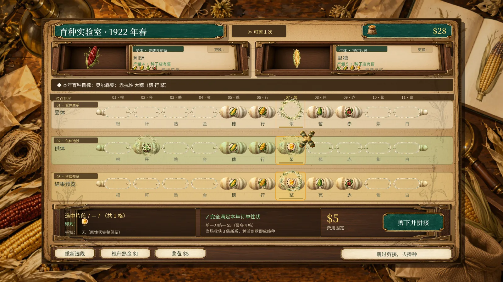
每关围绕一个新问题，再把机制组合起来。用风向、敌人意图、行动预览与新机制图解，减轻反复阅读规则的负担。
冬季订单
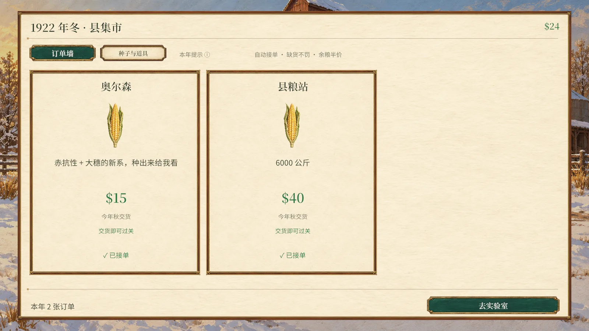
秋收验收
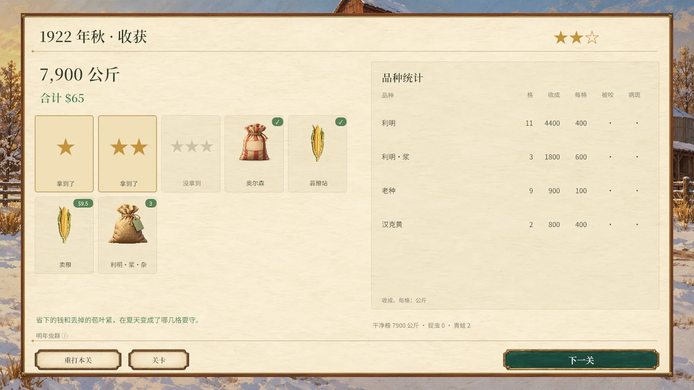
穗序 · 第四章
田野女王
策划任务 · 跨季决策
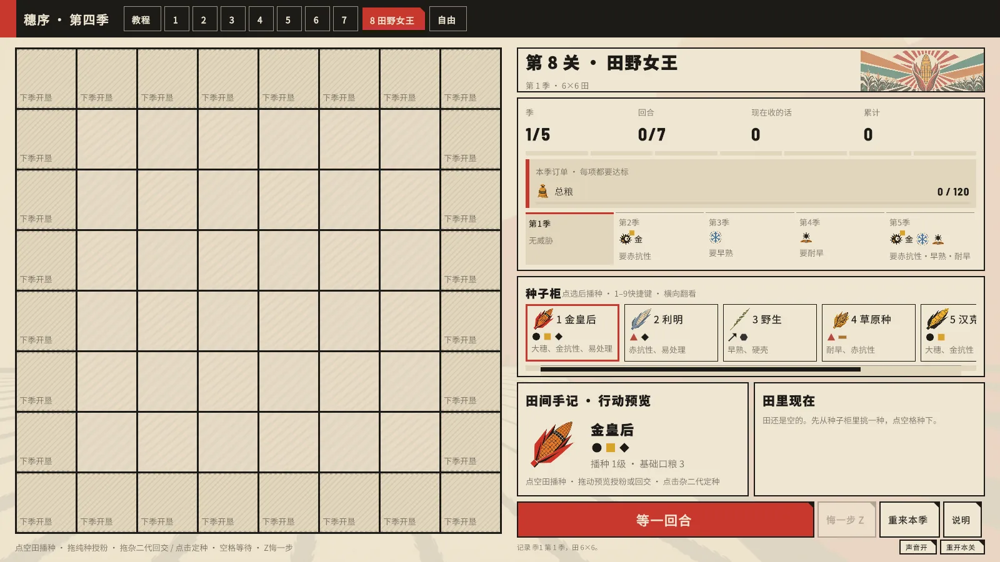
策划任务 · 目标与数值验证
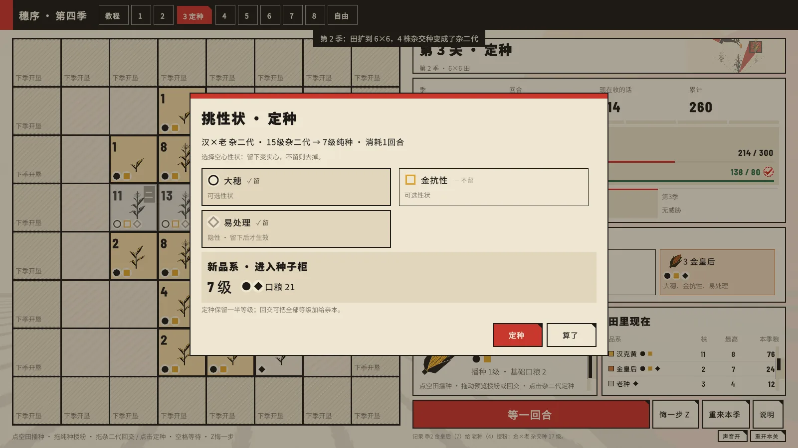
终关用“超级玉米”倒推亲本组合：大穗、双抗、早熟、耐旱，同时去掉硬壳。五季中既要养亲本，也要交当季订单。
用搜索、对照与路线重放检查可达性和余量，再核对 Unity 实现。

父本留下。母本变成杂交种，这一季粮翻倍。季末它变成杂二代，交回亲本那一路。

野生种来得及躲过霜，也带着硬壳，粮要减半。定种的时候不留它。

大穗，金抗、赤抗、早熟、耐旱都在，没有硬壳。那一株是超级玉米。
 汉克黄
汉克黄 老种
老种 利明
利明 野生
野生 草原种
草原种 白马牙
白马牙 金皇后
金皇后
超级玉米
回交前预览
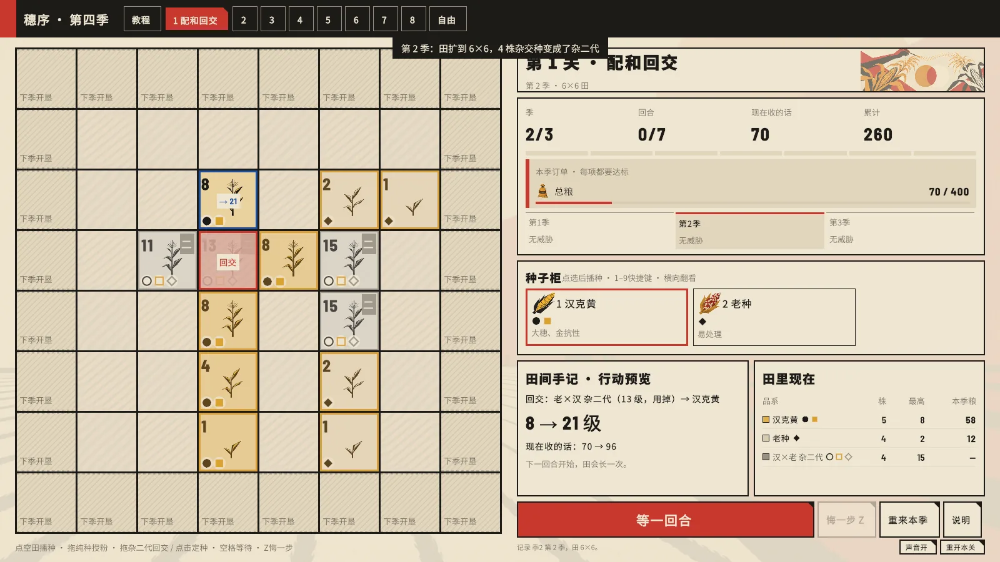